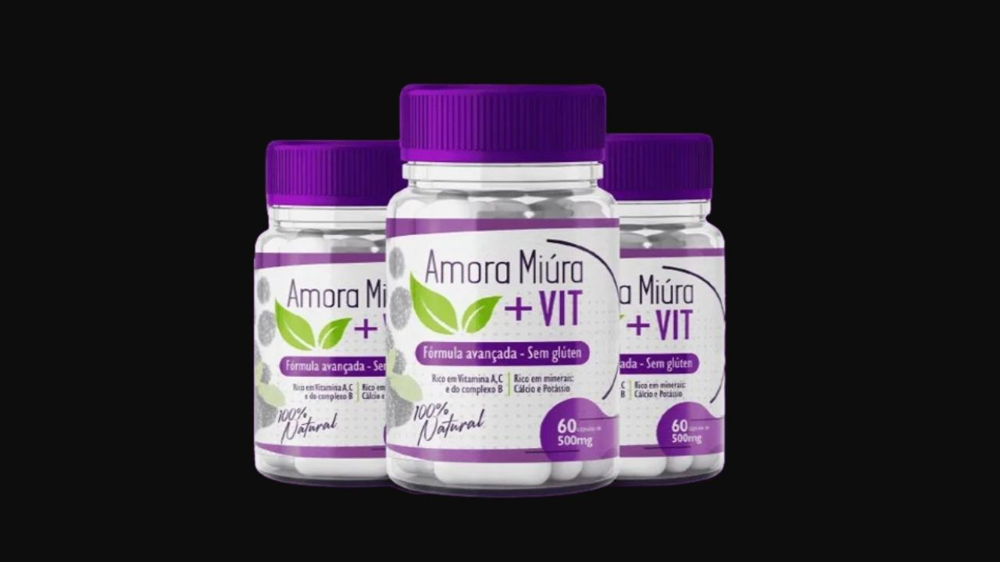

Analisamos os ingredientes, a tecnologia PROMENO3D® e o que esperar realisticamente para os sintomas da menopausa.
Por Dra. Ana Mendes — Especialista em Suplementos e Saúde Feminina · Publicado em abril de 2026

Acesse o site oficial e veja os ingredientes, kits e garantia de 30 dias.
→ Acessar Site Oficial da Amora Miúra + VIT✓ Garantia de 30 dias · Frete grátis · ANVISA aprovado
A Amora Miúra + VIT é um suplemento alimentar natural desenvolvido especificamente para mulheres na menopausa e no climatério. Diferente dos produtos genéricos de amora vendidos em farmácias, o Amora Miúra + VIT tem uma formulação exclusiva com a tecnologia PROMENO3D® — desenvolvida para atuar diretamente nos principais sintomas da menopausa.
A composição combina extrato concentrado de Amora Miúra com Vitaminas A, C e do Complexo B — ingredientes que atuam em conjunto no equilíbrio hormonal, na qualidade do sono, na saúde da pele e na disposição geral.
O produto é fabricado pela Naturance, com CNPJ verificável, registrado conforme a RDC 240/2018 da ANVISA e comercializado pela plataforma Monetizze.
A Amora Miúra contém fitohormônios que simulam a ação do estrogênio no organismo — o principal mecanismo por trás das ondas de calor. Estudos mostram redução significativa na frequência e intensidade dos fogachos com uso contínuo.
As Vitaminas do Complexo B presentes na fórmula auxiliam na regulação do sono através do metabolismo de neurotransmissores como a serotonina. Mulheres relatam melhora na qualidade do sono a partir da segunda semana de uso.
A oscilação hormonal da menopausa afeta diretamente o humor. Os fitohormônios da Amora Miúra auxiliam no equilíbrio hormonal, contribuindo para a estabilidade emocional e redução da irritabilidade.
A Vitamina A presente na fórmula atua na síntese de melanina e na produção de colágeno — essenciais para pele mais firme e para controle da queda capilar que afeta muitas mulheres na menopausa.
A queda do estrogênio na menopausa acelera a perda de densidade óssea. O cálcio e potássio da fórmula, combinados com a Vitamina C, contribuem para a saúde dos ossos e prevenção da osteoporose.
O Complexo B auxilia no metabolismo energético celular. Mulheres que usam relatam aumento de disposição para as atividades do dia a dia já nas primeiras semanas de tratamento.
Ingrediente principal. Rico em fitohormônios que simulam a ação do estrogênio de forma natural — sem hormônios sintéticos. É o ativo mais estudado para alívio dos sintomas da menopausa, especialmente fogachos e ressecamento íntimo.
Essencial para a saúde da pele, atua na síntese de melanina e produção de colágeno. Auxilia no controle da queda capilar — um dos sintomas menos comentados mas muito frequentes na menopausa.
Essencial para a formação de colágeno nos ossos, tecido conjuntivo e vasos sanguíneos. Tem ação antioxidante que auxilia na imunidade e na redução do processo inflamatório associado à menopausa.
Atuam no metabolismo energético e na regulação do sono. Auxiliam na redução da retenção de líquidos e no melhor funcionamento intestinal — queixas frequentes no período do climatério.
30 dias de garantia · Frete grátis · Fórmula 100% natural
→ Acessar Site Oficial da Amora Miúra + VIT✓ Aprovado ANVISA · Pagamento seguro · Entrega rastreada
Conteúdo informativo e independente. Não substitui orientação médica. Resultados podem variar. Este site contém links de afiliado.